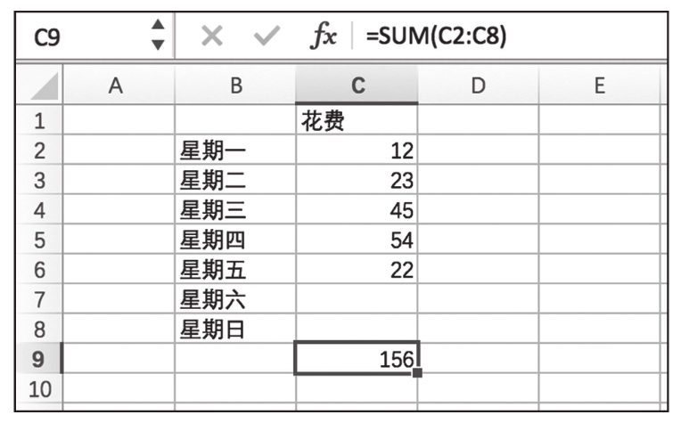

响应式编程（Reactive Programming）是一个令人振奋的编程方式。不要被“响应式”这个词吓到，其实这个概念并没有那么难理解，实际上，很可能你早已经无意中使用了响应式编程的思想。
如果你使用过Excel的公式功能，你就已经应用过响应式编程。假如你是刚打开这本书的读者，正好翻开就是这一页，提醒你这是一本讲编程的书，不是Excel的使用手册，Excel截图在这里只是用来说明一种编程思想。
图1-2演示使用Excel来统计多个格子中数据之和的功能，在Excel表格中，选中C9这个格子，在公式部分输入=，然后用鼠标选中C2到C8的格子，就完成了一次响应式编程。之后，无论我在C2到C8中填写什么数字，C9这个格子里的数值都会自动变为C2到C8所有格子的数值之和，换句话说，C9能够对这些格子的数值变化作出“响应”。

图1-2 Excel中的公式功能
响应式编程就是这么简单的一个概念，这个Excel的例子虽然简单，但是却体现了响应式编程的很多重要思想。程序的输入可看作一个数据流，在这个Excel表格中，输入就是用户在C2到C8格子中填充的数值，用户这个填充动作是完全不可预料的，可能先填C2，也可能先填C5，用户还可能反复修改C4格子里的数值；用户可能每天填一个数字，也可能到星期天把7个格子一次填完……无论用户用何种方式操作，可以看作一个数据流，这个流中的一个元素，是对某个格子的数值修改，这个程序都一视同仁，一样能够处理。
Excel的计算可以串起来，比如，C8虽然是一个计算的结果，我们同样可以利用SUM公式把C8和其他格子的数值加起来放在另一个格子里面，因为每个格子的地位是平等的，这样的公式可以任意组合，组合产生强大的功能效果，读者可以试着用Excel把多个星期的花费综合加起来放在另一个格子里。
响应式编程的这些特点如此自然，就算不是程序员也可以用Excel来创造具有计算能力的表格。当然，真正的响应式编程要比Excel复杂得多，要不然也不会需要这样一本书来介绍。接下来，我们就来介绍响应式编程世界里知名度最高的框架Reactive Extension。